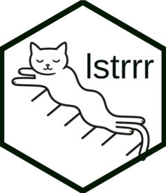
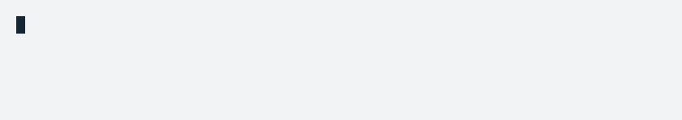

Use lstrrr to do some purrr-like things
Source:vignettes/do_purrrlike.Rmd
do_purrrlike.RmdTL;DR
Core Access
| Function | Description |
|---|---|
list_get(x, path) |
Read an element by path |
list_set(x, path, value) |
Set an element by path |
list_delete(x, path) |
Delete an element by path |
list_rename(x, path, name) |
Rename an element by path |
list_has(x, path) |
Check if a path exists |
list_depth(x) |
Compute nesting depth |
list_path(x) |
Get paths to all leaf nodes |
list_nleaf(x) |
Count leaf nodes |
list_find_value(x, val) |
Find paths where value matches |
Map & Walk
| Function | Description |
|---|---|
list_map(.x, .f) |
Apply .f to each leaf, preserving structure |
list_map2(.x, .y, .f) |
Map over corresponding leaves of two lists |
list_pmap(.l, .f) |
Map over corresponding leaves of multiple lists |
list_imap(.x, .f) |
Map over leaves with name or full path |
list_walk(.x, .f) |
Walk leaves for side effects |
list_walk2(.x, .y, .f) |
Walk corresponding leaves of two lists |
list_pwalk(.l, .f) |
Walk corresponding leaves of multiple lists |
list_iwalk(.x, .f) |
Walk over leaves with name or full path |
Introduction
lstrrr is designed to be a purrr-like package
handling nested lists. purrr also comes with some built-in
functions for handling lists, which can be used alongside
lstrrr to better serve practical needs.
Core Access
lstrrr use vector to represent the path to the element,
e.g. c("a", "b", "c"), which is similar to the
$ operator in R.

Other functions like list_delete(x, path),
list_has(x, path), list_depth(x),
list_path(x) are self-explanatory.
List Conversion
Let’s use the build-in dataset sputnik_1 as an
example:
list_nleaf(sputnik_1)You can use list_flatten() to flatten a nested list into
a flattened list (the elements of the list are not nested):
v <- list_flatten(sputnik_1)
head(v, 3)
cli::cli_alert_info("Class of v: {.cls {class(v)}}")
cli::cli_alert_info("Length of v: {.val {length(v)}} (using {.fun length})")
cli::cli_alert_info(
"Length of v: {.val {list_nleaf(v)}} (using {.fun list_nleaf})"
)The names of the elements are the dot-separated paths to the elements:
Separation symbols can be customized. Generally I don’t recommend
using _ as purrr does, because it’s a common separator in
names.
v2 <- list_flatten(sputnik_1, "$")
head(names(v2))Recursive mapping is the main difference between
lstrrr::list_flatten() and
purrr::list_flatten()., the former will flatten
all levels of the list, while the latter will flatten the second level
of the list (the first level is the list itself).
v3 <- purrr::list_flatten(sputnik_1, is_node = is.list)
head(v, 3)
cli::cli_alert_info("Class of v3: {.cls {class(v3)}}")
cli::cli_alert_info("Length of v3: {.val {length(v3)}} (using {.fun length})")
cli::cli_alert_info(
"Length of v3: {.val {list_nleaf(v3)}} (using {.fun list_nleaf})"
)Functional Programming
lstrrr provides a set of functions that are similar to
purrr’s, but for handling nested lists. Just use
list_* as the prefix of the function name.
If you want to map over multiple lists, make sure the lists have the same structure.
list_walk2(foo, foo, ~ message(paste0(.x, .y)))
list_pwalk(
list(foo, foo, foo),
\(x, y, z) {
Sys.sleep(0.5)
},
.progress = "pwalk"
)Customize the progress bar:
list_find() is used to find elements that satisfy a
predicate. Please note that the result is a list with only 1 level.
list_find(foo, ~ is.character(.x)) |> str()list_find_value() is used to find all paths where the
element is identical to a given value. Unlike list_find(),
which matches by predicate, list_find_value() matches by
value using identical() semantics.
list_filter() is used to filter leaves that satisfy a
predicate. Unlike list_find(), which returns a flat list of
matches, list_filter() keeps the original nested structure
and replaces non-matching leaves with NULL.
list_filter(foo, is.numeric) |> str()list_modify_if is used to modify elements that satisfy a
predicate. The structure of the list is preserved.
list_modify_if(foo, is.logical, ~ !.x) |> str()